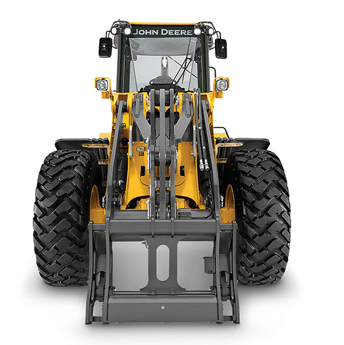
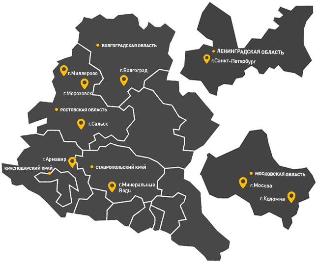
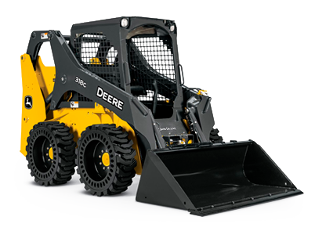
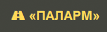

Многофункциональная кнопочная панель герметизирована от пыли и влаги и гарантированно выдерживает более двух миллионов нажатий. Запуск двигателя с кнопки исключает необходимость в ключе зажигания.
Высокотехнологичные фронтальные погрузчики
от производителя с опытом работы в 180 лет
Остаточная стоимость через 2 года 70%
Лизинг за 7 дней от John Deere Financial
Всегда в наличии 98% всего ассортимента запасных частей
Нужна консультация эксперта по фронтальным погрузчикам?
Оставьте свои контактные данные, наш эксперт позвонит в течение 30 минут и поможет подобрать фронтальный погрузчик, отвечающий именно Вашим задачам
Мы регулярно спрашиваем наших клиентов, как сделать наши фронтальные погрузчики лучше и эффективнее
80% всех улучшений наших фронтальных погрузчиков сделаны на основе комментариев клиентов, именно по этому они больше прочих отвечают целям и задачам современного Российского строительного бизнеса
01
Кнопочная SSM панель
02
Регулируемый автопереход на холостые обороты
Функция автоперехода на холостые обороты обеспечивает снижение оборотов двигателя, когда гидравлика не используется, заметно снижая расход топлива и уровень шума.
03
Система контроля пробуксовки
- Повышает производительность;
- Нет износа шин;
- Препятствует образованию рытвин.
04
ЖК Монитор, показывающий ошибки
Русифицированный монитор, совмещенный с системой бортовой диагностики машины, не только позволяет настраивать рабочие параметры автогрейдера, но и дает подробное описание неисправности, возможных причин ее возникновения и способов устранения.
05
Функция возврата в положение копания
Функция возврата в положение копания контролирует возврат навесного оборудования из положения разгрузки в положение под нужным углом. Работа функции контролируется регулируемыми датчиками и рычагом ковша.
06
Возврат в положение перевозки
Многие операторы используют эту функцию после разгрузки материала на землю, в прицеп или кузов. Сразу после разгрузки ковша оператор может перевести рычаг в переднее положение фиксации, после чего стрела опустится до нужной высоты. Оператору не нужно угадывать высоту или ждать, когда стрела остановится в нужном положении.
07
Органы управления в кабине оператора
Джойстик управления или двух рычажное сервоуправление обеспечивает плавность работы Дополнительные рукоятки отвечают за опцию 3-й и 4-й функции. В обоих исполнениях реализована функция быстрого переключения передач, по одной передаче за каждое нажатие.
08
Блокируемый гидротрансформатор
- Блокируется гидротрансформатор – прямая передача;
- Большее ускорение;
- Меньшее время цикла;
- Экономия топлива.
09
Система плавного хода
- Два режима работы;
- Значительно повышает производительность;
- Обеспечивает комфорт оператора;
- Предохраняет компоненты от ударов.
10
Отключение подъема стрелы
Благодаря этой функции стрела перестанет подниматься, как только будет достигнута предварительно заданная высота. Многие операторы используют эту функцию при загрузке кузовов и прицепов.
11
Счетчик циклов загрузки
Счетчик числа циклов загрузки помогает опереатору отслеживать количесво материала на мониторе
- Помогает отслеживать до 5 типов материала
- Чтобы увеличить число загруженных грузовиков нажмите кнопку «Добавить грузовик»
- Кнопка «Материал» позволяет переключаться с одного материала на другой
- до 5 типов.
Двигатели PowerTech™
Вся линейка фронтальных погрузчиков оснащается двигателями собственного производства John Deere PowerTech. Двигатели соответствуют стандартам Stage II и Stage III по составу выбросов выхлопных газов и адаптированы под топливо с повышенным содержанием серы и влаги и укомплектованы зимним пакетом: подогрев блока цилиндров и подогрев дизельного топлива. Использование мокрых гильз цилиндров двигателя:
Равномерное охлаждение цилиндра увеличивает срок службы двигателя. Стальные гильзы более износостойкими, чем монолитная конструкция. Каждую гильзу можно заменять отдельно, поэтому восстановление двигателя выполняется проще и требует меньше затрат.
Простота обслуживания
Ежедневные технические проверки легко выполняются с одной стороны машины с уровня земли. Дверца широко открывается, позволяя легко извлечь мерный щуп двигателя, визуально проверить уровень жидкости в гидробаке расширительных бачках охлаждающей жидкости и стеклоомывателя. Вертикальные навинчиваемые фильтры двигателя, коробки передач и гидросистемы, заменяются быстро, легко и без утечек.
Система охлаждения Quad-Cool
Благодаря концепции Quad- Cool радиаторы располагаются с четырех сторон в отдельных секциях, изолированных от тепла двигателя, исключает перекрытие потока воздуха, что позволяет повысить эффективность и долговечность их работы. Функция реверса вентилятора с интервалами включения позволяет эффективно выдувать пыль и песок скопившиеся в машине.

Быстросъемная муфта Hi - Vis
В передней части стрелы установлена система быстрого подключения навесного оборудования Hi-Vis входящая в стандартную комплектацию фронтальных погрузчиков до 624 модели включителльно. Использование системы Hi - Vis™ существенно ускоряет процесс замены навесного оборудования.
Модельный ряд фронтальных погрузчиков John Deere
Фронтальный погрузчик John Deere 524K-II
- Полезная мощность (SAE)
106 кВт (142 л.с.) при 1 900 об/мин
- Эксплуатационная масса
12 667 кг
- Объем ковша:
1,9 – 2,3 м³
- Вырывное усилие:
9 060 кг
Вам необходима мощная и маневренная машина? Тогда Вам подойдет фронтальный погрузчик John Deere серии K-II. Новые фронтальные погрузчики, созданные на базе более ранних моделей, отличаются еще большей производительностью и эксплуатационной надежностью. Машины оснащены дизельными двигателями John Deere PowerTech стандартов EPA Tier 3/EU Stage IIIA и Tier 2/ Stage II, которые отличаются большим рабочим объемом, мощностью и способностью выдерживать предельные нагрузки. Удобство технического обслуживания обеспечивает простой и быстрый доступ к точкам ежедневных проверок. Кроме того, все новые фронтальные погрузчики серии K-II в стандартной комплектации оснащаются пятискоростной трансмиссией и новой функцией адаптивного выключения сцепления, что позволяет еще сильнее повысить производительность, по сравнению с предыдущими моделями серии K. Машины серии K-II увеличат Ваши возможности.

Фронтальный погрузчик John Deere 544K-II
- Полезная мощность (SAE)
122 кВт (163 л.с.) при 1 900 об/мин
- Эксплуатационная масса
13 121 кг
- Объем ковша:
2,1 - 2,3 м³
- Вырывное усилие:
10 115 кг
Вам необходима мощная и маневренная машина? Тогда Вам подойдет фронтальный погрузчик John Deere серии K-II. Новые фронтальные погрузчики, созданные на базе более ранних моделей, отличаются еще большей производительностью и эксплуатационной надежностью. Машины оснащены дизельными двигателями John Deere PowerTech стандартов EPA Tier 3/EU Stage IIIA и Tier 2/ Stage II, которые отличаются большим рабочим объемом, мощностью и способностью выдерживать предельные нагрузки. Удобство технического обслуживания обеспечивает простой и быстрый доступ к точкам ежедневных проверок. Кроме того, все новые фронтальные погрузчики серии K-II в стандартной комплектации оснащаются пятискоростной трансмиссией и новой функцией адаптивного выключения сцепления, что позволяет еще сильнее повысить производительность, по сравнению с предыдущими моделями серии K. Машины серии K-II увеличат Ваши возможности.
Фронтальный погрузчик John Deere 624K-II
- Полезная мощность (SAE)
141 кВт (189 л.с.) при 1 800 об/мин
- Эксплуатационная масса
15 614 кг
- Объем ковша:
2,3 - 2,7 м³
- Вырывное усилие:
12 821 кг
Вам необходима мощная и маневренная машина? Тогда Вам подойдет фронтальный погрузчик John Deere серии K-II. Новые фронтальные погрузчики, созданные на базе более ранних моделей, отличаются еще большей производительностью и эксплуатационной надежностью. Машины оснащены дизельными двигателями John Deere PowerTech стандартов EPA Tier 3/EU Stage IIIA и Tier 2/ Stage II, которые отличаются большим рабочим объемом, мощностью и способностью выдерживать предельные нагрузки. Удобство технического обслуживания обеспечивает простой и быстрый доступ к точкам ежедневных проверок. Кроме того, все новые фронтальные погрузчики серии K-II в стандартной комплектации оснащаются пятискоростной трансмиссией и новой функцией адаптивного выключения сцепления, что позволяет еще сильнее повысить производительность, по сравнению с предыдущими моделями серии K. Машины серии K-II увеличат Ваши возможности.
Фронтальный погрузчик John Deere 644K
- Полезная мощность (SAE)
167 кВт (224 л.с.) при 1 700 об/мин
- Эксплуатационная масса
18 333 кг
- Объем ковша:
2,6 - 3,3 м³
- Вырывное усилие:
15 378 кг
Чтобы получить параллельный подъем, Вам не придется жертвовать усилием резания. Powerllel 644K сочетает в себе важнейшие преимущества погрузчика и вилочного погрузчика. В отличие от традиционного захвата быстрой смены рабочего оборудования, инновационная конструкция машины позволяет использовать силы, создаваемые грузом, в работе стрелы, для увеличения усилия отрыва даже в тяжелых условиях земляных работ. Впечатляющий крутящий момент во время опрокидывания и возврат ковша в исходное положение позволяют колесному погрузчику 644K отлично справляться с разными погрузочными работами.

Фронтальный погрузчик John Deere 724K
- Полезная мощность (SAE)
197 кВт (264 л.с.) при 1 800 об/мин
- Эксплуатационная масса
19 299 кг
- Объем ковша:
2,6 - 3,6 м³
- Вырывное усилие:
15 607 кг
Высокие стандарты производительности требуют серьезных размышлений. Многие усовершенствования в серии K разрабатывались на основе опыта специалистов, применяющих технику в работе: владельцев и операторов оборудования. Благодаря свежим идеям от Группы защиты потребителей мы увеличили кабину, усовершенствовали охлаждение, оптимизировали гидравлику, повысили эргономичность и даже добавили новое дополнительное оборудование.
Фронтальный погрузчик John Deere 744K-II
- Полезная мощность (SAE)
227 кВт (304 л.с.) при 1 500 об/мин
- Эксплуатационная масса
25 314 кг
- Объем ковша:
4,0 - 4,5 м³
- Вырывное усилие:
19 367 кг
Высокие стандарты производительности требуют серьезных размышлений. Многие усовершенствования в серии K разрабатывались на основе опыта специалистов, применяющих технику в работе: владельцев и операторов оборудования. Благодаря свежим идеям от Группы защиты потребителей мы увеличили кабину, усовершенствовали охлаждение, оптимизировали гидравлику, повысили эргономичность и даже добавили новое дополнительное оборудование. Все было сделано с целью повысить производительность и период продуктивной эксплуатации, при этом снизив ежедневные эксплуатационные затраты.
Фронтальный погрузчик John Deere 844K-III
- Полезная мощность (SAE)
283 кВт (380 л.с.) при 1 600 об/мин
- Эксплуатационная масса
33 610 кг
- Объем ковша:
4,8 – 6,1 м³
- Вырывное усилие:
17 248 кг
Высокие стандарты производительности требуют серьезных размышлений. Многие усовершенствования в серии K разрабатывались на основе опыта специалистов, применяющих технику в работе: владельцев и операторов оборудования. Благодаря свежим идеям от Группы защиты потребителей мы увеличили кабину, усовершенствовали охлаждение, оптимизировали гидравлику, повысили эргономичность и даже добавили новое дополнительное оборудование. Все было сделано с целью повысить производительность и период продуктивной эксплуатации, при этом снизив ежедневные эксплуатационные затраты.
Фронтальный погрузчик John Deere WL56
- Полезная мощность (SAE)
160 кВт (215 л.с.) при 2 200 об/мин
- Эксплуатационная масса
16 400 кг
- Объем ковша:
2,7 - 3,7 м³
- Вырывное усилие:
17 248 кг
Фронтальный погрузчик WL56, сконструированный и изготовленный при помощи передовыхтехнологий на заводе мирового уровня компании John Deere, обладает великолепнойпроизводительностью и надежностью. Отлично зарекомендовавшие себяв работе системы и компоненты, в том числе мощный двигатель John Deere, усиленныешарнирные механизмы, прочная стрела и рама способствуют сокращению временипростоя. А дилерская сеть John Deere обеспечит доступность запасных частей и оперативнуюподдержку, предоставленную высококвалифицированными специалистами –это выгодно отличает WL56 от других погрузчиков в своем классе.
Сравнительная таблица основных характеристик фронтальных погрузчиков John Deere
| Модель | ПОЛЕЗНАЯ МОЩНОСТЬ (ISO 9249) | Эксплуатационная масса | ОБЪЁМ КОВША | ВЫРЫВНОЕ УСИЛИЕ |
|---|---|---|---|---|
| 524K-II | 106 кВт (142 л.с.) при 1 900 об/мин | 12 667 кг | 1,9 – 2,3 м³ | 9 060 кг |
| 544K-II | 122 кВт (163 л.с.) при 1 900 об/мин | 13 121 кг | 2,1 - 2,3 м³ | 10 115 кг |
| 624K-II | 141 кВт (189 л.с.) при 1 800 об/мин | 15 614 кг | 2,3 - 2,7 м³ | 12 821 кг |
| 644K | 167 кВт (224 л.с.) при 1 700 об/мин | 18 333 кг | 2,6 - 3,3 м³ | 15 378 кг |
| 724K | 197 кВт (264 л.с.) при 1 800 об/мин | 19 299 кг | 2,6 - 3,6 м³ | 15 607 кг |
| 744K-II | 227 кВт (304 л.с.) при 1 500 об/мин | 25 314 кг | 4,0 - 4,5 м³ | 19 367 кг |
| 844K-III | 283 кВт (380 л.с.) при 1 600 об/мин | 33 610 кг | 4,8 – 6,1 м³ | 17 248 кг |
| WL56 | 160 кВт (215 л.с.) при 2 200 об/мин | 16 400 кг | 2,7 - 3,7 м³ | 17 248 кг |
Посмотрите на наши фронтальные погрузчики в работе
Фронтальный погрузчик John Deere 744 K-II
Фронтальный погрузчик John Deere 744K (демо-шоу)
Технологии, входящие в состав стандартной комплектации техники, позволяют сократить простои и упредить поломки
Решения John Deere WorkSight - это набор простых в использовании технологических решений, направленных на оптимизацию способов работы машины, эксплуатационной надежности и рабочей площадки. Они предназначены для управления парком техники любого размера, начиная с одной единицы до крупных смешанных парков. Эти технологии позволят повысить рентабельность строительных проектов за счет достижения максимально возможной производительности техники и максимального времени ее безотказной работы при одновременной оптимизации эксплуатационных расходов.
Технологические решения John Deere WorkSight
Сокращение простоев техники с John Deere WorkSight
Оптимизация работы парка техники с John Deere WorkSight
80% НЕИСПРАВНОСТЕЙ МАШИНЫ МЫ МОЖЕМ ПРОДИАГНОСТИРОВАТЬ И ПРЕДУПРЕДИТЬ В ТЕЧЕНИЕ ДВУХ ЧАСОВ
Мы круглосуточно проверяем всю проданную технику на неисправности и сообщаем об этом клиентам. Большинство проблем предупреждаем удаленно и заранее при помощи системы JDLink, не выставляя счета за пробег и не тратя лишнего времени.
Система телематики JDLink
Позволяет реализовать все возможности по повышению прибыли, заложенные в пакет решений John Deere WorkSight. Она помогает централизованно осуществлять «умное» управление всем парком техники и расширять бизнес благодаря массе возможностей — от предоставления базовых данных, до отправки предупреждений о состоянии машин и отслеживания эффективности работы. Ваш дилер John Deere может помочь Вам сократить простои техники, оценив и выполнив сброс диагностических кодов неисправностей и выполнив запись показателей работы машин в удаленном режиме, благодаря доступным в составе John Deere WorkSight уникальным функциям удаленной диагностики и программирования.


Возможности JDLink - системы удаленного мониторинга для управления парком техники
Управление техникой
-
Контроль
-
Информация о том, где находится ваша техника
-
Информация о том, работе и простоях машины
-
Уведомления
-
Уведомления о состоянии вашей машины
-
Уведомления при возникновении проблем (по электронной почте или SMS)
-
Наработка и обслуживание
-
Информация о цикле жизни/работе фильтров
-
Информация о необходимости сервисных работ
Оптимизация рабочей площадки
-
Производительность машины
-
Информация, позволяющая оценить эффективность работы машины на данной площадке
-
Загрузка машины
-
Информация о том, сколько тонн перевезено и сколько циклов завершено
-
Местоположение на рабочей площадке
-
Информация о том, на какой рабочей площадке находится машина и как она используется
Оптимизация рабочего времени
-
Удаленное программирование
-
Скачивание и установка обновлений удаленно
-
Диагностические коды неисправностей
-
Проверка ошибок в удаленном режиме
-
Удаленная диагностика
-
Беспроводное подключение к машине и устранение неисправности без выезда к оборудованию
Оптимизация парка оборудования
-
Данные о расходе топлива
-
Узнайте средний расход топлива за конкретный период
-
Использование двигателя
-
Информация о времени простоя и работы оборудования
-
Использование топлива машиной
-
Информация об общем расходе топлива
Выставочный зал техники есть в каждом нашем филиале
Мы имеем 15 дилерских центров в России. Расположение филиалов — не более 150 км до самого дальнего клиента — позволяет оперативно реагировать на запросы заказчиков и оказывать необходимое сервисное обслуживание. Региональные площадки располагают службами продаж и сервиса, выставочными экспозициями техники и складами запасных частей.
Забронируйте удобные дату и время посещения ближайшего Выставочного центра John Deere
Чтобы там Вас сопровождал эксперт, который сможет ответить на любой вопрос

Уже 180 лет мы производим машины которые годами работают без капитального ремонта



Мини-погрузчики
Грузоподъемность без противовеса до 1221 кг
Получить консультацию Выбрать модель
В любом регионе России есть несколько десятков крупных строительных компаний, использующих технику John Deere


- 


{kind=link}